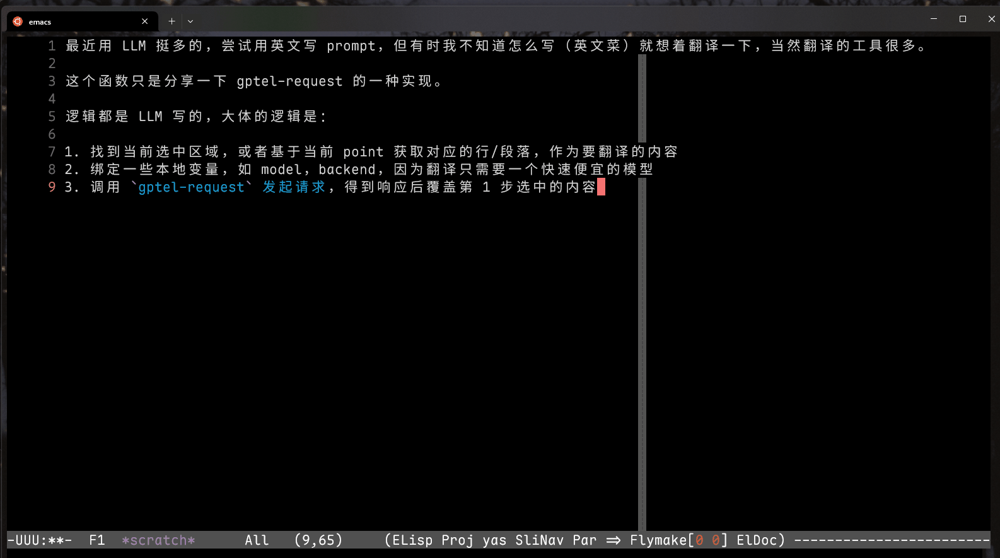

使用 gptel-request 封装一个翻译方法
{kind=link}

最近用 LLM 挺多的，尝试用英文写 prompt，但有时我不知道怎么写，就想着翻译一下。
Emacs 中的翻译的工具也不少，写这个函数只是分享一下 gptel-request 的一种实现。
一些 Emacs 的翻译配置：
- Translation In Emacs
- 英文翻译 by Manatee LazyCat
逻辑都是 LLM 写的，大体的逻辑是（源码见 init-gptel.el）：
- 找到当前选中区域，或者基于当前 point 获取对应的行/段落，作为要翻译的内容。
- 绑定一些本地变量，如 model，backend，因为翻译只需要一个快速便宜的模型。
- 调用
gptel-request，写一个翻译的 prompt，发起请求，得到响应后覆盖第 1 步选中的内容。
更新：
- 偶尔碰到 openai 的模型会失效，Google 的相对稳定一点，设置一个 fallback 的模型，如果失效了就调用 fallback 模型重试。
- 支持自定义 prompt，有时可能需要翻译成别的语言可能有用。
spike-leung/translate-region
(defun spike-leung/translate-region (prompt) "Translate the selected region (default to English) replace it. If no region is active, try to guess the sentence or paragraph at point. With prefix argument, PROMPT is used as the translation prompt." (interactive (list (when current-prefix-arg (read-string "Translation prompt: " "Translate the following text to English:")))) (require 'gptel) (let* ((has-region (use-region-p)) (bounds (cond (has-region (cons (region-beginning) (region-end))) ((use-region-p) (cons (region-beginning) (region-end))) ((and (fboundp 'bounds-of-thing-at-point)) (or (bounds-of-thing-at-point 'sentence) (bounds-of-thing-at-point 'paragraph) (bounds-of-thing-at-point 'line) (cons (point) (point)))) (t (cons (point) (point))))) (start (car bounds)) (end (cdr bounds)) (text (buffer-substring-no-properties start end)) (prompt-text (or prompt "Translate the following text to English:"))) (if (string-blank-p text) (user-error "No text to translate") (let ((openrouter-backend (gptel-make-openai "OpenRouter" :host "openrouter.ai" :endpoint "/api/v1/chat/completions" :stream t :key (spike-leung/get-openrouter-api-key) :models spike-leung/openrouter-models)) (primary-model 'openai/gpt-4.1-nano) (fallback-model 'google/gemini-2.0-flash-001)) (cl-labels ((do-translate (model) (let ((gptel-backend openrouter-backend) (gptel-model model) (gptel-use-tools nil) (gptel-use-context nil)) (gptel-request (format "%s\n\n%s" prompt-text text) :callback (lambda (response _) (if (and response (not (string-blank-p response))) (save-excursion (delete-region start end) (goto-char start) (insert response)) (if (eq model primary-model) (progn (message "Primary model failed, retrying with fallback model...") (do-translate fallback-model)) (message "Translation failed with both models.")))))))) (do-translate primary-model))))))
利用 gptel-request ，封装一些 prompt，可以方便地解决平时一些重复的、可以使用 LLM 解决的任务。
更新一个更好的实现，代码更优雅一些。
首先通过 defmacro 定义一些 preset，在 preset 中设置 :rewrite-message ，定义 rewrite 的 prompt：
定义 preset
(defmacro spike-leung/define-gptel-preset (name &rest args) `(gptel-make-preset ,name :backend "OpenRouter" :model 'google/gemini-3-flash-preview ,@args)) (spike-leung/define-gptel-preset 'quote-format :description "格式化引用" :rewrite-message "按照以下要求，格式化内容: - 当存在英文和中文翻译，移除英文 - 当涉及到缩写，需要在中文附近补充英文缩写和完整的英文，如最低合格读者 (MQR, Minimum Qualified Reader) - 当存在中英文混合，中文和英文/数字之间需要保留一个空格 - 当文本中包含破折号，例如 ——、--，需要将他们替换为 ⸺ ，注意，⸺ 的前后需要保留一个空格 - 文本中的引号替换为直角引号 「」、『』，如果引号里面还有引号，则采用 「『』」的嵌套形式 需要格式化内容：") (spike-leung/define-gptel-preset 'lyric-format :description "格式化歌词" :rewrite-message "格式化歌词，将原始歌词和中文翻译拆分成两部分。 对于原文歌词，输出格式为： #+begin_verse [原文歌词] #+end_verse 对于翻译，输出格式为： #+begin_details #+html: <summary>歌词大意</summary> #+begin_verse [翻译] #+end_verse #+end_details")
在 preset 中 :rewrite-message 对应的是 gptel-rewrite-message 或者 gptel--rewrite-message ，你还可以定义很多参数，具体见 gptel - Option presets。
如果不了解 macro，推荐阅读 Evaluation inside of a macro or special form。
接下来定义一个方法，选择 preset 然后调用 gptel--suffix-rewrite :
spike-leung/gptel-rewrite-preset
(defun spike-leung/gptel-rewrite-preset () "Pick a preset from `gptel--known-presets' and execute `gptel--suffix-rewrite'." (interactive) ;; gptel--suffix-rewrite 依赖 gptel-rewrite 的加载 (require 'gptel-rewrite) (unless (use-region-p) (user-error "Requires a selected region")) (let* ((preset-name ;; 选择 preset (completing-read "Pick a preset: " gptel--known-presets ;; 过滤选项，只保留带有 `:rewrite-message' 的选项 (lambda (preset) (plist-member (cdr preset) :rewrite-message)) ;; 必须匹配选项 t)) ;; 找到对应的 preset，获取 preset 设置 (preset (gptel-get-preset (intern preset-name)))) ;; 使用 preset 调用 gptel-rewrite (gptel-with-preset preset (gptel--suffix-rewrite))))
相关代码见：
你可以在 使用 gptel-request 写的一个翻译函数 进行讨论，或者看看其他人分享的思路。